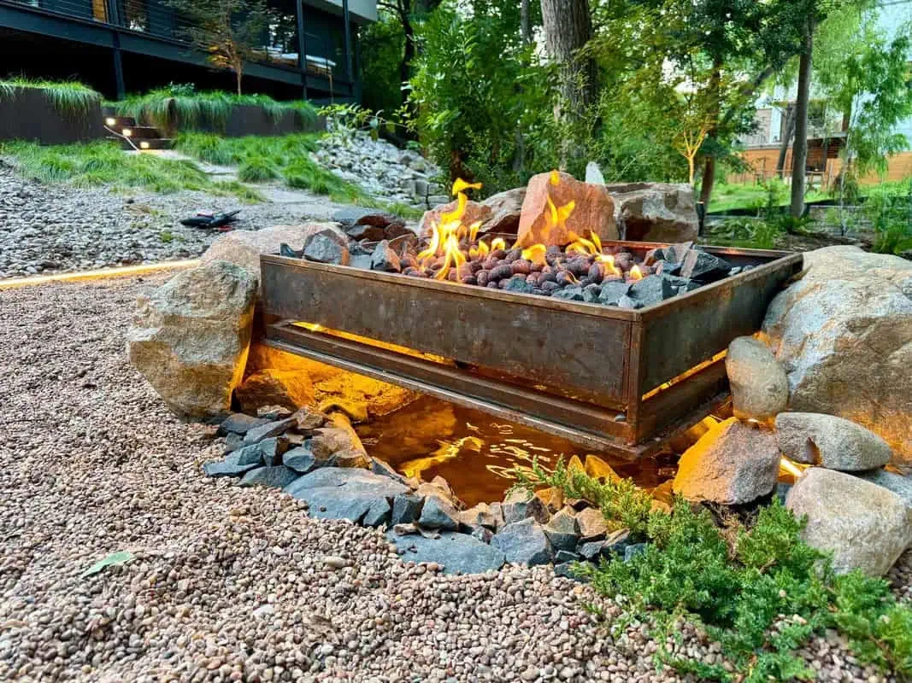
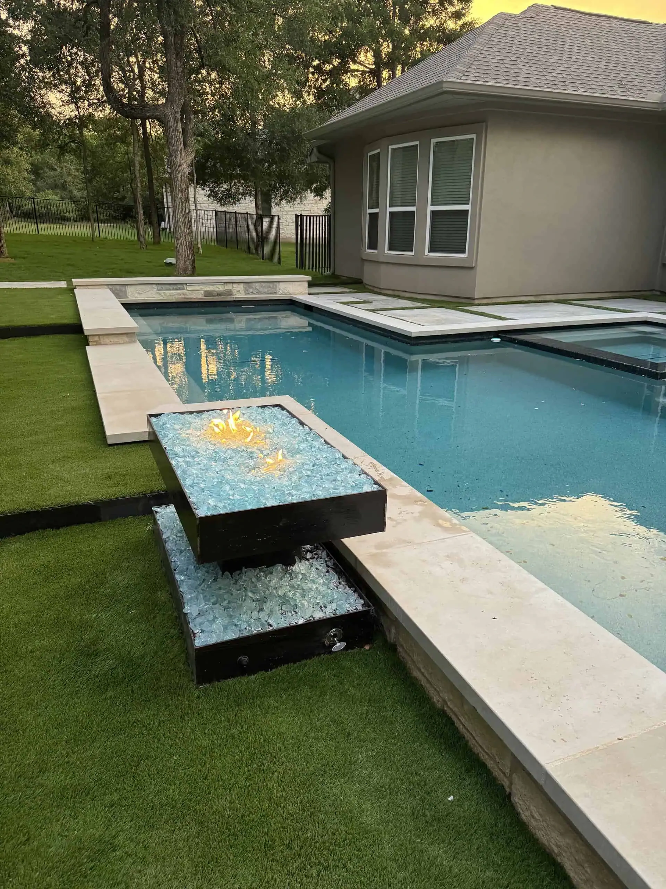

A fire pit changes how you use your backyard. It turns a patio into a destination, extends your outdoor season by months, and gives your family a place to gather that does not involve a screen. In Austin, where evenings are comfortable eight months out of the year, a fire feature is one of the highest-return upgrades you can make to your outdoor space.
We build fire pits every week. Here are the styles, materials, and considerations that matter most for Austin backyards.
Floating Steel Fire Pits
This is our signature. A floating steel fire pit is a custom-welded steel bowl or box that sits elevated on a steel base, creating a clean visual line that hovers above the ground plane. We weld these in-house from 1/4-inch or 3/8-inch hot-rolled steel, and the raw metal develops a natural patina over time that looks better every year.
The floating design serves a practical purpose too. By elevating the fire off the ground, you protect the surface beneath it — whether that is a new concrete patio, decomposed granite, or a deck. The air gap also allows the base to cool faster after the fire goes out.
Most of our floating fire pits range from $3,500 to $8,000 depending on size, steel gauge, and whether we integrate a gas line or keep it wood-burning. We can build them round, square, rectangular, or in custom shapes to fit your space.

Stone Fire Pits
A stone fire pit is the classic choice and works beautifully in Hill Country-style yards. We build with Austin limestone, chopped stone, or stacked ledgestone depending on the aesthetic you are after. Stone fire pits feel grounded and permanent — they become the anchor of your outdoor living space.
For a built-in stone fire pit with a proper concrete footer, fire-rated liner, and cap stone, expect to invest $5,000 to $12,000. We often integrate seating walls into the design, which adds function and creates a defined gathering area without needing separate furniture.
Gas vs. Wood Burning: What Works in Austin
Both work well here, and the right choice depends on how you want to use your fire pit. Here is the honest breakdown:
Wood-burning pros:
- Real fire. Real crackle. Real smoke smell. Nothing replicates the experience of a wood fire
- No gas line to run, which can save $1,500–$3,000 in installation
- Higher heat output — you will feel the warmth from further away
- Works during power outages (gas fire pits with electronic ignition do not)
Gas fire pit pros:
- Instant on, instant off. No startup time, no waiting for coals to cool
- No smoke, no ash, no ember cleanup. Your guests do not go home smelling like a campfire
- Adjustable flame height
- Cleaner aesthetic options with glass media or ceramic logs
- Easier compliance with Austin fire code during burn bans
In our experience, about 60% of Austin clients choose gas for convenience, especially families with young kids. The other 40% want the real thing and are willing to manage the fire. There is no wrong answer — we build both every week.
Fire Pit Media and Materials
What you put inside the fire pit matters as much as the pit itself. Each option creates a different look and feel:
- Volcanic rock: The most popular choice. Black or red-brown lava rock hides the gas burner cleanly, retains heat, and creates an organic, rugged look. About $80–$150 to fill a standard pit
- Black fire glass: Tempered glass pieces that reflect and refract the flame. Creates a sleek, modern look, especially at night. Runs $200–$500 for a full fill depending on size
- Ceramic fire balls: Smooth, uniform spheres in matte black, white, or gray. Architectural feel. Best for gas pits where the balls sit on top of a burner pan. $150–$400 for a set
- Steel fire logs: We fabricate these from the same steel as our planters. They never burn, never need replacing, and develop a patina that matches the pit. Custom only


Austin Fire Code: What You Need to Know
The City of Austin and Travis County have specific rules about open flames. The key points:
- Setback: Fire pits must be at least 10 feet from any structure, property line, or combustible material. This includes fences, pergolas, and overhanging tree branches
- Burn bans: Travis County issues burn bans during dry conditions. Wood-burning fire pits cannot be used during a burn ban. Gas fire pits with a shutoff valve are typically exempt, but check the current order
- Size: Recreational fires must be contained in a pit no larger than 3 feet in diameter and 2 feet in height
- Fuel: Only clean, dry firewood. No trash, no treated lumber, no yard waste. This is an air quality rule as much as a fire safety rule
We handle all of these considerations during the design phase. Every fire feature we build meets current Austin and Travis County fire code, and we will walk you through the rules that apply to your specific property.
Integrating Fire with Your Outdoor Living Space
A fire pit works best when it is part of a larger design. The projects that get the most use are the ones where the fire feature connects to a seating area, an outdoor kitchen, or a xeriscape garden — not the ones where a pit sits alone in the middle of a lawn.
Consider these combinations that we build regularly in Austin:
- Fire pit + seating wall + decomposed granite patio: The most popular package. Creates a complete outdoor room for $15,000–$25,000
- Fire pit + pergola + string lighting: Perfect for entertaining. The pergola frames the space and the fire anchors it. $20,000–$40,000 depending on pergola size and materials
- Fire pit + outdoor kitchen + dining area: The full outdoor living setup. Cook, eat, then move to the fire. $35,000–$65,000+ for the complete build
Start Your Fire Pit Project
Every backyard is different, and the best fire pit for your space depends on your layout, your budget, and how you actually want to use it. We will come out, look at your yard, talk through the options, and give you a free estimate with no pressure.
Browse our fire pit portfolio to see recent builds, or schedule a free consultation to get started on yours.